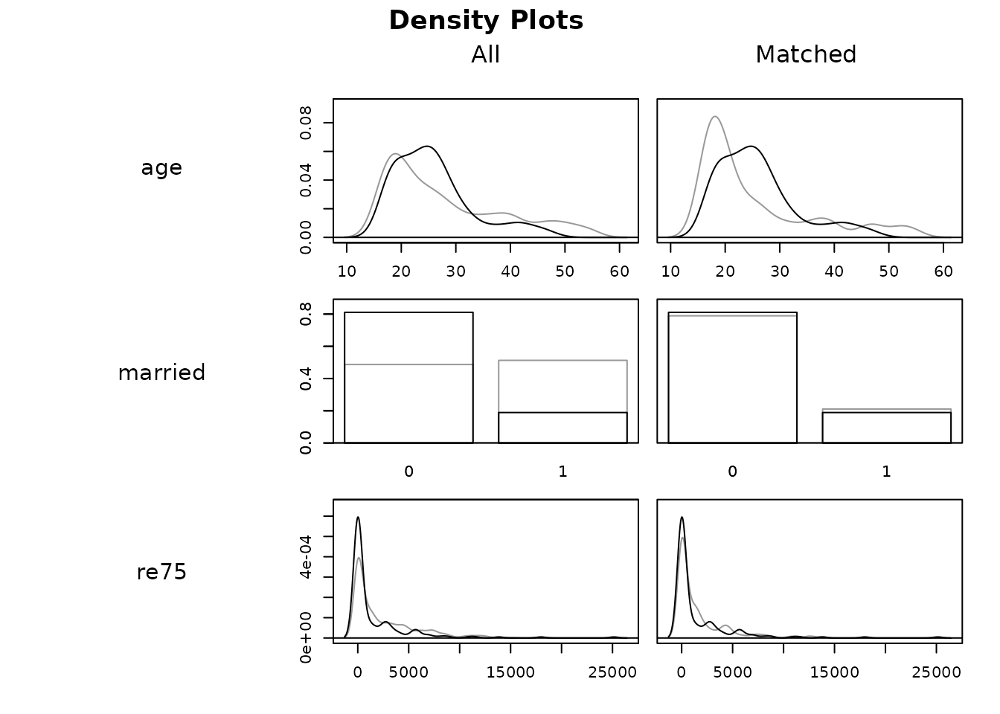

Introduction
MatchIt implements the suggestions of Ho, Imai, King, and Stuart (2007) for improving parametric statistical models for estimating treatment effects in observational studies and reducing model dependence by preprocessing data with semi-parametric and non-parametric matching methods. After appropriately preprocessing with MatchIt, researchers can use whatever parametric model they would have used without MatchIt and produce inferences that are more robust and less sensitive to modeling assumptions. MatchIt reduces the dependence of causal inferences on commonly made, but hard-to-justify, statistical modeling assumptions using a large range of sophisticated matching methods. The package includes several popular approaches to matching and provides access to methods implemented in other packages through its single, unified, and easy-to-use interface.
Matching is used in the context of estimating the causal effect of a binary treatment or exposure on an outcome while controlling for measured pre-treatment variables, typically confounding variables or variables prognostic of the outcome. Here and throughout the MatchIt documentation we use the word “treatment” to refer to the focal causal variable of interest, with “treated” and “control” reflecting the names of the treatment groups. The goal of matching is to produce covariate balance, that is, for the distributions of covariates in the two groups to be approximately equal to each other, as they would be in a successful randomized experiment. The importance of covariate balance is that it allows for increased robustness to the choice of model used to estimate the treatment effect; in perfectly balanced samples, a simple difference in means can be a valid treatment effect estimate. Here we do not aim to provide a full introduction to matching or causal inference theory, but simply to explain how to use MatchIt to perform nonparametric preprocessing. For excellent and accessible introductions to matching, see Stuart (2010) and Austin (2011).
A matching analysis involves four primary steps: 1) planning, 2) matching, 3) assessing the quality of matches, and 4) estimating the treatment effect and its uncertainty. Here we briefly discuss these steps and how they can be implemented with MatchIt; in the other included vignettes, these steps are discussed in more detail.
We will use Lalonde’s data on the evaluation of the National Supported Work program to demonstrate MatchIt’s capabilities. First, we load MatchIt and bring in the lalonde dataset.
## treat age educ race married nodegree re74 re75 re78
## NSW1 1 37 11 black 1 1 0 0 9930.0460
## NSW2 1 22 9 hispan 0 1 0 0 3595.8940
## NSW3 1 30 12 black 0 0 0 0 24909.4500
## NSW4 1 27 11 black 0 1 0 0 7506.1460
## NSW5 1 33 8 black 0 1 0 0 289.7899
## NSW6 1 22 9 black 0 1 0 0 4056.4940The statistical quantity of interest is the causal effect of the treatment (treat) on 1978 earnings (re78). The other variables are pre-treatment covariates. See ?lalonde for more information on this dataset. In particular, the analysis is concerned with the marginal, total effect of the treatment for those who actually received the treatment.
In what follows, we briefly the four steps of a matching analysis and how to implement them in MatchIt. For more details, we recommend reading the other vignettes, vignette("matching-methods"), vignette("assessing-balance"), and vignette("estimating-effects"), especially for users less familiar with matching methods. For the use of MatchIt with sampling weights, also see vignette("sampling-weights"). It is important to recognize that the ease of using MatchIt does not imply the simplicity of matching methods; advanced statistical methods like matching that require many decisions to be made and caution in their use should only be performed by those with statistical training.
Planning
The planning phase of a matching analysis involves selecting the type of effect to be estimated, selecting the target population to which the treatment effect is to generalize, and selecting the covariates for which balance is required for an unbiased estimate of the treatment effect. Each of these are theoretical steps that do not involve performing analyses on the data. Ideally, they should be considered prior to data collection in the planning stage of a study. Thinking about them early can aid in performing a complete and cost-effective analysis.
Selecting the type of effect to be estimated. There are a few different types of effects to be estimated. In the presence of mediating variables, one might be interested in the direct effect of the treatment that does not pass through the mediating variables or the total effect of the treatment across all causal pathways. Matching is well suited for estimating total effects, and specific mediation methods may be better suited for other mediation-related quantities. One may be interested in a conditional effect or a marginal effect. A conditional effect is the effect of a treatment within some strata of other prognostic variables (e.g., at the patient level), and a marginal effect is the average effect of a treatment in a population (e.g., for implementing a broad policy change). Different types of matching are well suited for each of these, but the most common forms are best used for estimating marginal treatment effects; for conditional treatment effects, typically modeling assumptions are required or matching must be done within strata of the conditioning variables. Matching can reduce the reliance on correct model specification for conditional effects.
Selecting a target population. The target population is the population to which the effect estimate is to generalize. Typically, an effect estimated in a sample generalizes to the population from which the sample is a probability sample. If the sample is not a probability sample from any population (e.g., it is a convenience sample or involves patients from an arbitrary hospital), the target population can be unclear. Often, the target population is a group of units who are eligible for the treatment (or a subset thereof). Causal estimands are defined by the target population to which they generalize.
The average treatment effect in the population (ATE) is the average effect of the treatment for all units in the target population. The average treatment effect in the treated (ATT) is the average effect of the treatment for units like those who actually were treated. The most common forms of matching are best suited for estimating the ATT, though some are also available for estimating the ATE. Some matching methods distort the sample in such a way that the estimated treatment effect corresponds neither to the ATE nor to the ATT, but rather to the effect in an unspecified population (sometimes called the ATM, or average treatment effect in the remaining matched sample). When the target population is not so important (e.g., in the case of treatment effect discovery), such methods may be attractive; otherwise, care should be taken in ensuring the effect generalizes to the target population of interest. Different matching methods allow for different target populations, so it is important to choose a matching method that allows one to estimate the desired effect.
Selecting covariates to balance. Selecting covariates carefully is critical for ensuring the resulting treatment effect estimate is free of confounding and can be validly interpreted as a causal effect. To estimate total causal effects, all covariates must be measured prior to treatment (or otherwise not be affected by the treatment). Covariates should be those that cause variation in the outcome and selection into treatment group; these are known as confounding variables. See VanderWeele (2019) for a guide on covariate selection. Ideally these covariates are measured without error and are free of missingness.
Check Initial Imbalance
After planning and prior to matching, it can be a good idea to view the initial imbalance in one’s data that matching is attempting to eliminate. We can do this using the code below:
# No matching; constructing a pre-match matchit object
m.out0 <- matchit(treat ~ age + educ + race + married +
nodegree + re74 + re75, data = lalonde,
method = NULL, distance = "glm")The first argument is a formula relating the treatment to the covariates used in estimating the propensity score and for which balance is to be assessed. The data argument specifies the dataset where these variables exist. Typically, the method argument specifies the method of matching to be performed; here, we wet it to NULL so we can assess balance prior to matching1. The distance argument specifies the method for estimating the propensity score, a one-dimensional summary of all the included covariates, computed as the predicted probability of being the treated group given the covariates; here, we set it to "glm" for generalized linear model, which implements logistic regression by default2 (see ?distance for other options).
Below we assess balance on the unmatched data using summary():
# Checking balance prior to matching
summary(m.out0)##
## Call:
## matchit(formula = treat ~ age + educ + race + married + nodegree +
## re74 + re75, data = lalonde, method = NULL, distance = "glm")
##
## Summary of Balance for All Data:
## Means Treated Means Control Std. Mean Diff. Var. Ratio eCDF Mean eCDF Max
## distance 0.5774 0.1822 1.7941 0.9211 0.3774 0.6444
## age 25.8162 28.0303 -0.3094 0.4400 0.0813 0.1577
## educ 10.3459 10.2354 0.0550 0.4959 0.0347 0.1114
## raceblack 0.8432 0.2028 1.7615 . 0.6404 0.6404
## racehispan 0.0595 0.1422 -0.3498 . 0.0827 0.0827
## racewhite 0.0973 0.6550 -1.8819 . 0.5577 0.5577
## married 0.1892 0.5128 -0.8263 . 0.3236 0.3236
## nodegree 0.7081 0.5967 0.2450 . 0.1114 0.1114
## re74 2095.5737 5619.2365 -0.7211 0.5181 0.2248 0.4470
## re75 1532.0553 2466.4844 -0.2903 0.9563 0.1342 0.2876
##
##
## Sample Sizes:
## Control Treated
## All 429 185
## Matched 429 185
## Unmatched 0 0
## Discarded 0 0We can see severe imbalances as measured by the standardized mean differences (Std. Mean Diff.), variance ratios (Var. Ratio), and empirical cumulative density function (eCDF) statistics. Values of standardized mean differences and eCDF statistics close to zero and values of variance ratios close to one indicate good balance, and here many of them are far from their ideal values.
Matching
Now, matching can be performed. There are several different classes and methods of matching, described in vignette("matching-methods"). Here, we begin by briefly demonstrating 1:1 nearest neighbor (NN) matching on the propensity score, which is appropriate for estimating the ATT. One by one, each treated unit is paired with an available control unit that has the closest propensity score to it. Any remaining control units are left unmatched and excluded from further analysis. Due to the theoretical balancing properties of the propensity score described by Rosenbaum and Rubin (1983), propensity score matching can be an effective way to achieve covariate balance in the treatment groups. Below we demonstrate the use of matchit() to perform nearest neighbor propensity score matching.
# 1:1 NN PS matching w/o replacement
m.out1 <- matchit(treat ~ age + educ + race + married +
nodegree + re74 + re75, data = lalonde,
method = "nearest", distance = "glm")We use the same syntax as before, but this time specify method = "nearest" to implement nearest neighbor matching, again using a logistic regression propensity score. Many other arguments are available for tuning the matching method and method of propensity score estimation.
The matching outputs are contained in the m.out1 object. Printing this object gives a description of the type of matching performed:
m.out1## A matchit object
## - method: 1:1 nearest neighbor matching without replacement
## - distance: Propensity score
## - estimated with logistic regression
## - number of obs.: 614 (original), 370 (matched)
## - target estimand: ATT
## - covariates: age, educ, race, married, nodegree, re74, re75The key components of the m.out1 object are weights (the computed matching weights), subclass (matching pair membership), distance (the estimated propensity score), and match.matrix (which control units are matched to each treated unit). How these can be used for estimating the effect of the treatment after matching is detailed in vignette("estimating-effects").
Assessing the Quality of Matches
Although matching on the propensity score is often effective at eliminating differences between the treatment groups to achieve covariate balance, its performance in this regard must be assessed. If covariates remain imbalanced after matching, the matching is considered unsuccessful, and a different matching specification should be tried. MatchIt offers a few tools for the assessment of covariate balance after matching. These include graphical and statistical methods. More detail on the interpretation of the included plots and statistics can be found in vignette("assessing-balance").
In addition to covariate balance, the quality of the match is determined by how many units remain after matching. Matching often involves discarding units that are not paired with other units, and some matching options, such as setting restrictions for common support or calipers, can further decrease the number of remaining units. If, after matching, the remaining sample size is small, the resulting effect estimate may be imprecise. In many cases, there will be a trade-off between balance and remaining sample size. How to optimally choose among them is an instance of the fundamental bias-variance trade-off problem that cannot be resolved without substantive knowledge of the phenomena under study. Prospective power analyses can be used to determine how small a sample can be before necessary precision is sacrificed.
To assess the quality of the resulting matches numerically, we can use the summary() function on m.out1 as before. Here we set un = FALSE to suppress display of the balance before matching for brevity and because we already saw it. (Leaving it as TRUE, its default, would display balance both before and after matching.)
# Checking balance after NN matching
summary(m.out1, un = FALSE)##
## Call:
## matchit(formula = treat ~ age + educ + race + married + nodegree +
## re74 + re75, data = lalonde, method = "nearest", distance = "glm")
##
## Summary of Balance for Matched Data:
## Means Treated Means Control Std. Mean Diff. Var. Ratio eCDF Mean eCDF Max Std. Pair Dist.
## distance 0.5774 0.3629 0.9739 0.7566 0.1321 0.4216 0.9740
## age 25.8162 25.3027 0.0718 0.4568 0.0847 0.2541 1.3938
## educ 10.3459 10.6054 -0.1290 0.5721 0.0239 0.0757 1.2474
## raceblack 0.8432 0.4703 1.0259 . 0.3730 0.3730 1.0259
## racehispan 0.0595 0.2162 -0.6629 . 0.1568 0.1568 1.0743
## racewhite 0.0973 0.3135 -0.7296 . 0.2162 0.2162 0.8390
## married 0.1892 0.2108 -0.0552 . 0.0216 0.0216 0.8281
## nodegree 0.7081 0.6378 0.1546 . 0.0703 0.0703 1.0106
## re74 2095.5737 2342.1076 -0.0505 1.3289 0.0469 0.2757 0.7965
## re75 1532.0553 1614.7451 -0.0257 1.4956 0.0452 0.2054 0.7381
##
## Sample Sizes:
## Control Treated
## All 429 185
## Matched 185 185
## Unmatched 244 0
## Discarded 0 0At the top is a summary of covariate balance after matching. Although balance has improved for some covariates, in general balance is still quite poor, indicating that nearest neighbor propensity score matching is not sufficient for removing confounding in this dataset. The final column, Std. Pair Diff, displays the average absolute within-pair difference of each covariate. When these values are small, better balance is typically achieved and estimated effects are more robust to misspecification of the outcome model (King and Nielsen 2019; Rubin 1973).
Next is a table of the sample sizes before and after matching. The matching procedure left 244 control units unmatched. Ideally, unmatched units would be those far from the treated units and would require greater extrapolation were they to have been retained. We can visualize the distribution of propensity scores of those who were matched using plot() with type = "jitter":
plot(m.out1, type = "jitter", interactive = FALSE)We can visually examine balance on the covariates using plot() with type = "qq":

Points far from the solid diagonal line are the areas of the covariate distributions that differ between the treatment groups. Although married and re75 appear to have improved balance after matching, the case is mixed for age.
Trying a Different Matching Specification
Given the poor performance of nearest neighbor matching in this example, we can try a different matching method or make other changes to the matching algorithm or distance specification. Below, we’ll try full matching, which matches every treated unit to at least one control and every control to at least one treated unit (Hansen 2004; Stuart and Green 2008). We’ll also try a different link (probit) for the propensity score model.
# Full matching on a probit PS
m.out2 <- matchit(treat ~ age + educ + race + married +
nodegree + re74 + re75, data = lalonde,
method = "full", distance = "glm", link = "probit")
m.out2## A matchit object
## - method: Optimal full matching
## - distance: Propensity score
## - estimated with probit regression
## - number of obs.: 614 (original), 614 (matched)
## - target estimand: ATT
## - covariates: age, educ, race, married, nodegree, re74, re75We can examine balance on this new matching specification.
# Checking balance after full matching
summary(m.out2, un = FALSE)##
## Call:
## matchit(formula = treat ~ age + educ + race + married + nodegree +
## re74 + re75, data = lalonde, method = "full", distance = "glm",
## link = "probit")
##
## Summary of Balance for Matched Data:
## Means Treated Means Control Std. Mean Diff. Var. Ratio eCDF Mean eCDF Max Std. Pair Dist.
## distance 0.5773 0.5765 0.0040 0.9943 0.0042 0.0541 0.0198
## age 25.8162 25.6722 0.0201 0.4614 0.0848 0.2846 1.2741
## educ 10.3459 10.3693 -0.0116 0.6173 0.0194 0.0597 1.2233
## raceblack 0.8432 0.8389 0.0119 . 0.0043 0.0043 0.0162
## racehispan 0.0595 0.0500 0.0402 . 0.0095 0.0095 0.4985
## racewhite 0.0973 0.1111 -0.0467 . 0.0138 0.0138 0.3911
## married 0.1892 0.1580 0.0797 . 0.0312 0.0312 0.4866
## nodegree 0.7081 0.6898 0.0404 . 0.0184 0.0184 0.9593
## re74 2095.5737 2103.5534 -0.0016 1.3513 0.0328 0.2159 0.8533
## re75 1532.0553 1552.4673 -0.0063 1.5678 0.0496 0.2013 0.8279
##
## Sample Sizes:
## Control Treated
## All 429. 185
## Matched (ESS) 53.51 185
## Matched 429. 185
## Unmatched 0. 0
## Discarded 0. 0Balance is far better, as determined by the lower standardized mean differences and eCDF statistics. The balance should be reported when publishing the results of a matching analysis. This can be done either in a table, using the values resulting from summary(), or in a plot, such as a Love plot, which we can make by calling plot() on the summary() output:

Love plots are a simple and straightforward way to summarize balance visually. See vignette("assessing-balance") for more information on how to customize MatchIt’s Love plot and how to use cobalt, a package designed specifically for balance assessment and reporting that is compatible with MatchIt.
Estimating the Treatment Effect
How treatment effects are estimated depends on what form of matching was performed. See vignette("estimating-effects") for information on the variety of way to estimate effects and standard errors after each type of matching and for several outcome types. After 1:1 matching without replacement (i.e., the first matching specification above), we can run a simple regression of the outcome on the treatment in the matched sample (i.e., including the matching weights). With continuous outcomes, it is often a good idea to also include the covariates used in the matching in the effect estimation, as doing so can provide additional robustness to slight imbalances remaining after the matching and can improve precision.
Even though the 1:1 matching was not successful, we’ll demonstrate here how to estimate a treatment effect after performing such an analysis. First, we’ll extract the matched dataset from the matchit object using match.data(). This dataset only contains the matched units and adds columns for distance, weights, and subclass (described previously).
m.data1 <- match.data(m.out1)
head(m.data1)## treat age educ race married nodegree re74 re75 re78 distance weights subclass
## NSW1 1 37 11 black 1 1 0 0 9930.0460 0.6387699 1 1
## NSW2 1 22 9 hispan 0 1 0 0 3595.8940 0.2246342 1 98
## NSW3 1 30 12 black 0 0 0 0 24909.4500 0.6782439 1 109
## NSW4 1 27 11 black 0 1 0 0 7506.1460 0.7763241 1 120
## NSW5 1 33 8 black 0 1 0 0 289.7899 0.7016387 1 131
## NSW6 1 22 9 black 0 1 0 0 4056.4940 0.6990699 1 142We can then estimate a treatment effect in this dataset using the standard regression functions in R, like lm() or glm(), being sure to include the matching weights (stored in the weights variable of the match.data() output) in the estimation3. We recommend using cluster-robust standard errors for most analyses, with pair membership as the clustering variable; the lmtest and sandwich packages together make this straightforward.
library("lmtest") #coeftest
library("sandwich") #vcovCL
fit1 <- lm(re78 ~ treat + age + educ + race + married + nodegree +
re74 + re75, data = m.data1, weights = weights)
coeftest(fit1, vcov. = vcovCL, cluster = ~subclass)##
## t test of coefficients:
##
## Estimate Std. Error t value Pr(>|t|)
## (Intercept) -2.5816e+03 3.3209e+03 -0.7774 0.437439
## treat 1.3449e+03 7.3084e+02 1.8403 0.066552 .
## age 7.8035e+00 4.4148e+01 0.1768 0.859797
## educ 6.0220e+02 2.1007e+02 2.8667 0.004391 **
## racehispan 1.5335e+03 1.0248e+03 1.4964 0.135417
## racewhite 4.6943e+02 8.9854e+02 0.5224 0.601687
## married -1.5825e+02 9.3354e+02 -0.1695 0.865482
## nodegree 9.2328e+02 1.1496e+03 0.8032 0.422412
## re74 2.6362e-02 1.6646e-01 0.1584 0.874257
## re75 2.2068e-01 1.6771e-01 1.3158 0.189069
## ---
## Signif. codes: 0 '***' 0.001 '**' 0.01 '*' 0.05 '.' 0.1 ' ' 1The coefficient on treat is the estimated ATT. The other coefficients and tests should not be interpreted or reported. Estimating standard errors with matched data is an area of ongoing development. Generally, the approach demonstrated above works well for continuous outcomes. See vignette("estimating-effects") for more information on how to estimate standard errors with each type of matching and with different outcome types.
A benefit of matching is that the outcome model used to estimate the treatment effect is robust to misspecification when balance has been achieved. With 1:1 nearest neighbor matching, we failed to achieve balance, so one should be cautious about trusting the estimated effect. With full matching, we were able to achieve balance, so the effect estimate should depend less on the form of the outcome model used. Below we estimate the effect and standard error of the treatment effect after full matching. As before, we’ll use functions from the lmtest and sandwich packages here because they provide a fairly general interface to estimating coefficients and standard errors.
m.data2 <- match.data(m.out2)
fit2 <- lm(re78 ~ treat + age + educ + race + married + nodegree +
re74 + re75, data = m.data2, weights = weights)
coeftest(fit2, vcov. = vcovCL, cluster = ~subclass)##
## t test of coefficients:
##
## Estimate Std. Error t value Pr(>|t|)
## (Intercept) 2.8493e+03 3.1547e+03 0.9032 0.3667819
## treat 1.9797e+03 7.5611e+02 2.6183 0.0090589 **
## age -4.5799e+01 3.7917e+01 -1.2079 0.2275592
## educ 2.3234e+02 2.0245e+02 1.1477 0.2515594
## racehispan 9.6380e+02 1.4435e+03 0.6677 0.5045794
## racewhite 1.7067e+03 8.2231e+02 2.0755 0.0383636 *
## married 9.0378e+02 1.1858e+03 0.7622 0.4462384
## nodegree -1.2712e+03 1.2691e+03 -1.0017 0.3169017
## re74 -1.1459e-02 1.4547e-01 -0.0788 0.9372369
## re75 5.4080e-01 1.4212e-01 3.8053 0.0001561 ***
## ---
## Signif. codes: 0 '***' 0.001 '**' 0.01 '*' 0.05 '.' 0.1 ' ' 1Given the results of these two estimates, we would be inclined to trust the one resulting from the second analysis, i.e., using full matching, because better balance was achieved on all the variables, making the effect estimate less sensitive to the form of the outcome model we used.
Effect estimation with nonlinear models (e.g., for binary or time-to-event event outcomes) is more complicated due to noncollapsibility of the estimated effects; including additional covariates in the model can change the meaning of the estimated effect. See vignette("estimating-effects") for more details. Note that for some models, effect and standard error estimation is still being researched.
Reporting Results
To report matching results in a manuscript or research report, a few key pieces of information are required. One should be as detailed as possible about the matching procedure and the decisions made to ensure the analysis is replicable and can be adequately assessed for soundness by the audience. Key pieces of information to include are 1) the matching specification used (including the method and any additional options, like calipers or common support restrictions), 2) the distance measure used (including how it was estimated e.g., using logistic regression for propensity scores), 3) which other matching methods were tried prior to settling on a final specification and how the choices were made, 4) the balance of the final matching specification (including standardized mean differences and other balance statistics for the variables, their powers, and their interactions; some of these can be reported as summaries rather than in full detail), 5) the number of matched, unmatched, and discarded units included in the effect estimation, and 6) the method of estimating the treatment effect and standard error or confidence interval (including the specific model used and the specific type of standard error). See Thoemmes and Kim (2011, p109) for a complete list of specific details to report. Below is an example of how we might write up the prior analysis:
We used propensity score matching to estimate the average marginal effect of the treatment on 1978 earnings on those who received it accounting for confounding by the included covariates. We first attempted 1:1 nearest neighbor propensity score matching without replacement with a propensity score estimated using logistic regression of the treatment on the covariates. This matching yielded poor balance, so we instead tried full matching on the propensity score, which yielded adequate balance, as indicated in Table 1 and Figure 1. The propensity score was estimated using a probit regression of the treatment on the covariates, which yielded better balance than did a logistic regression. After matching, all standardized mean differences for the covariates were below 0.1 and all standardized mean differences for squares and two-way interactions between covariates were below .15, indicating adequate balance. Full matching uses all treated and all control units, so no units were discarded by the matching.
To estimate the treatment effect and its standard error, we fit a linear regression model with 1978 earnings as the outcome and the treatment and the covariates as additive predictors and included the full matching weights in the estimation. The coefficient on the treatment was taken to be the estimate of the treatment effect. The
lm()function was used to estimate the effect, and a cluster-robust variance as implemented in thevcovCL()function in thesandwichpackage was used to estimate its standard error with matching stratum membership as the clustering variable.The estimated effect was $1980 (SE = 756.1, p = .009), indicating that the average effect of the treatment for those who received it is to increase earnings.
Conclusion
Although we have covered the basics of performing a matching analysis here, to use matching to its full potential, the more advanced methods available in MatchIt should be considered. We recommend reading the other vignettes included here to gain a better understand of all the MatchIt has to offer and how to use it responsibly and effectively. As previously stated, the ease of using MatchIt does not imply that matching or causal inference in general are simple matters; matching is an advanced statistical technique that should be used with care and caution. We hope the capabilities of MatchIt ease and encourage the use of nonparametric preprocessing for estimating causal effects in a robust and well-justified way.
References
Austin, Peter C. 2011. “An Introduction to Propensity Score Methods for Reducing the Effects of Confounding in Observational Studies.” Multivariate Behavioral Research 46 (3): 399–424. https://doi.org/10.1080/00273171.2011.568786.
Hansen, Ben B. 2004. “Full Matching in an Observational Study of Coaching for the Sat.” Journal of the American Statistical Association 99 (467): 609–18. https://doi.org/10.1198/016214504000000647.
Ho, Daniel E., Kosuke Imai, Gary King, and Elizabeth A. Stuart. 2007. “Matching as Nonparametric Preprocessing for Reducing Model Dependence in Parametric Causal Inference.” Political Analysis 15 (3): 199–236. https://doi.org/10.1093/pan/mpl013.
King, Gary, and Richard Nielsen. 2019. “Why Propensity Scores Should Not Be Used for Matching.” Political Analysis, May, 1–20. https://doi.org/10.1017/pan.2019.11.
Rosenbaum, Paul R., and Donald B. Rubin. 1983. “The Central Role of the Propensity Score in Observational Studies for Causal Effects.” Biometrika 70 (1): 41–55. https://doi.org/10.1093/biomet/70.1.41.
Rubin, Donald B. 1973. “Matching to Remove Bias in Observational Studies.” Biometrics 29 (1): 159. https://doi.org/10.2307/2529684.
Stuart, Elizabeth A. 2010. “Matching Methods for Causal Inference: A Review and a Look Forward.” Statistical Science 25 (1): 1–21. https://doi.org/10.1214/09-STS313.
Stuart, Elizabeth A., and Kerry M. Green. 2008. “Using Full Matching to Estimate Causal Effects in Nonexperimental Studies: Examining the Relationship Between Adolescent Marijuana Use and Adult Outcomes.” Developmental Psychology 44 (2): 395–406. https://doi.org/10.1037/0012-1649.44.2.395.
Thoemmes, Felix J., and Eun Sook Kim. 2011. “A Systematic Review of Propensity Score Methods in the Social Sciences.” Multivariate Behavioral Research 46 (1): 90–118. https://doi.org/10.1080/00273171.2011.540475.
VanderWeele, Tyler J. 2019. “Principles of Confounder Selection.” European Journal of Epidemiology 34 (3): 211–19. https://doi.org/10.1007/s10654-019-00494-6.
Note that the default for
methodis"nearest"to perform nearest neighbor matching. To prevent any matching from taking place in order to assess pre-matching imbalance,methodmust be set toNULL.↩︎Note that setting
distance = "logit", which was the default inMatchItversion prior to 4.0.0, will also estimate logistic regression propensity scores. Because it is the default, thedistanceargument can actually be omitted if logistic regression propensity scores are desired.↩︎With 1:1 nearest neighbor matching without replacement, excluding the matching weights does not change the estimates. For all other forms of matching, they are required, so we recommend always including them for consistency.↩︎